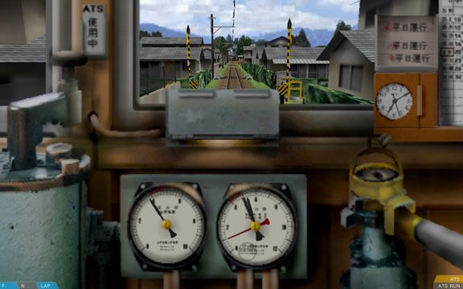

游戏控制的简要说明
该页面介绍游戏的驾驶界面和控制方法。当你进入游戏驾驶列车，您应该会看到一个差不多这样的界面：

在这篇文章里，我们将介绍界面中各个部分的意义，以及如何控制游戏中的列车。
请注意：由于您是可以重新绑定键盘按键的，我们会同时写出一个按键的功能名称和默认键位，以便您重新指定按键或使用摇杆后仍然能通过功能名称找到对应按键。例如：POWER_INCRASE 增加牵引功率 (Z)。
此外，还应该注意列车开发者是可以自己编写车载信号系统扩展程序的，这可能影响到列车的操作方法。本文主要针对于采用游戏内置信号系统的列车。如果您的列车采用了自定义信号系统，操作方法可能存在不同，您应该寻找或向开发者索要对应列车信号系统的操作说明。
1.换向器、牵引和制动手柄
列车最基础的控制是通过换向器、牵引手柄（即油门）、制动手柄（即刹车）和紧急制动器实现的。
-
换向器、牵引手柄和制动手柄的状态是在屏幕左下角显示的。
-
紧急制动器的工作状态和制动手柄状态在一起显示。如果施加了紧急制动，制动手柄状态那里会显示“紧急”。
-
如果列车使用联控手柄（牵引手柄和制动手柄合为一体），两个系统的状态也会在一起显示。
换向器
换向器改变列车的运行方向。换向器可以处于三个位置：B（向后倒车），N（中位空档）和F（向前前进）。
在很多情况下，当您开始驾驶列车时，列车的换向器都是位于中位的，您需要手动将它移动到向前位置，然后列车才可以移动。
-
按下REVERSER_FORWARD 前推换向器 (F)键可以使换向器向前移动一个位置。
-
按下REVERSER_BACKWARD 后拉换向器 (B)键可以使换向器向后移动一个位置。
牵引（功率，油门）手柄
牵引手柄控制电动机的输出功率。手柄处于零位时，电动机的电源被切断。如果手柄处于加速级位，界面上将显示像牵引1、牵引2、牵引3之类的文字。可用的手柄级位数量随列车而定。总体来说，更高的牵引级位加速更快。不过注意在轨道湿滑（如果线路作者有模拟）等情况下，采用过高的牵引级位会导致车轮转动力量过大而摩擦力不足，造成车轮打滑，无法加速。
-
按下POWER_INCREASE 增加牵引功率 (Z)键可以增加牵引级位。（注意BVE是日式铁道模拟游戏，日式列车上增加功率是向后拉杆）
-
按下POWER_DECREASE 减少牵引功率 (A)键可以增加牵引级位。（注意BVE是日式铁道模拟游戏，日式列车上减少功率是向前推杆）
-
在使用联控手柄的列车上，按下SINGLE_POWER 后拉联控手柄 (Z)键可以减少牵引级位。（同上）
-
在使用联控手柄的列车上，按下SINGLE_NEUTRAL 回中联控手柄 (A)或SINGLE_BRAKE 前推联控手柄 (Q)键可以减少牵引级位。（同上）
分级制动手柄
制动手柄控制电磁制动的功率或空气制动的压力。手柄处于缓解时，制动器不施加制动。如果手柄处于制动级位，界面上将显示像制动1、制动2、制动3之类的文字。可用的手柄级位数量随列车而定。总体来说，更高的制动级位减速更快。不过注意在轨道湿滑（如果线路作者有模拟）等情况下，采用过高的制动级位会导致车轮被抱死（懂汽车的肯定知道这个），无法减速。
-
在使用分离手柄的列车上，按下BRAKE_INCREASE 增加制动级位 (.)按键可以增加制动级位。
-
在使用分离手柄的列车上，按下BRAKE_DECREASE 减少制动级位 (,)按键可以减少制动级位。
-
在使用联控手柄的列车上，按下SINGLE_BRAKE 前推联控手柄 (Q)按键可以增加制动级位。
-
在使用联控手柄的列车上，按下SINGLE_NEUTRAL 回中联控手柄 (A)或SINGLE_POWER 后拉联控手柄 (Z)按键可以减少制动级位。
有些列车安装有抑速制动系统。抑速制动级位在缓解和制动1之间，自动调节制动力来抵消列车下坡时的加速度，使列车下坡时速度保持恒定。不过，抑速制动没那么智能，并不会在上坡时自动加速。
自动空气制动器
有一些列车（例如部分有轨电车）并没有分级的制动手柄，只有一个手动操作的制动阀门。这些列车的牵引和制动手柄都是分离的。这个制动阀门的状态包括缓解，保持和增压三个位置。
-
按下BRAKE_INCREASE 增加制动级位 (.)可以将阀门从缓解移动到保持、从保持移动到增压。
-
按下BRAKE_DECREASE 减少制动级位 (,)可以将阀门从增压移动到保持、从保持移动到缓解。

为了正确操作自动空气制动器，需要持续注意制动气缸中的空气压力。在上方截图中，制动缸压力是通过右侧压力表的红色指针显示的。当阀门处于缓解位时，制动气缸中的空气压力慢慢减小，使得制动力慢慢减小。当气压为零时，列车不施加制动。当阀门处于增压位时，制动气缸中的空气压力慢慢增大，使得制动力慢慢增大。当气压达到最大值时，列车也减速最快。当阀门处于保持位时，制动气泵不工作，制动气缸中的空气压力维持不变，列车保持现在的制动力继续减速。
请注意在自动空气制动机中，阀门并不是直接控制气缸的，而是通过一根总风管（直通管，制动管）间接控制的。所以，从移动阀门位置到气缸压力真正开始变化是有一些延迟的。在操作时应该考虑延迟，提前操作，才能准确地控制制动。
另外，有些列车的驾驶室里并没有制动缸压力表，而是可能有一个总风管（直通管，制动管）压力表。总风管压力和制动缸压力是正好相反的：总风管压力越高，制动力越弱；总风管压力越低，制动力越强。当气压为零时，列车施加紧急制动。
紧急制动器
-
在使用分离手柄的列车上，按下BRAKE_EMERGENCY 紧急制动级位 (/)按键施加紧急制动。
-
在使用联控手柄的列车上，按下SINGLE_EMERGENCY 紧急制动位置 (1)按键施加紧急制动。
紧急制动通常比常用制动的制动力更大。
按下一个减少制动级位的按键，例如BRAKE_DECREASE 减少制动级位 (,), SINGLE_NEUTRAL 联控手柄回中 (A) or SINGLE_POWER 联控手柄后拉 (Z)（随列车而定）即可解除紧急制动。在一些空气制动列车上，解除紧急制动需要给直通管重新加压，可能会耗时半分钟左右。
2.驾驶失知制动装置和定速装置
安装了驾驶失知制动装置或定速装置的列车在界面右下角显示它们的状态。
驾驶失知制动装置会持续监控换向器、加速和制动手柄的状态。如果列车驾驶持续一分钟没有进行任何操作，将会触发警铃，同时指示器会变为橙色。此时你必须在5秒内按下SECURITY_A2 车载信号系统A2按键 (delete)。否则，ATS-SN将采取紧急制动。将换向器移至中位，制动手柄移至紧急制动，牵引手柄移至零位，然后按下SECURITY_B1 车载信号系统B1按键 (home)键，紧急制动将会缓解。使用笔记本的同志们对不住了，如果键盘上没有，改下键位吧。
定速装置调节牵引力，使列车保持现有速度。它并不会施加制动来避免列车在下坡路段加速（跟上面的抑速制动真™是一对）。如果列车有安装，可以通过DEVICE_CONSTSPEED 定速设备开关 (backspace)按键开关它。当该设备启动时，定速指示器将变为绿色。该设备只会选择小于目前牵引级位的加速功率，所以一般来说，应当在使用定速装置时将牵引手柄推到最大级位。
3.操作车门
在某些列车上，必须手动操作车门；而在另一些列车上车门会自动开关，或者会由车掌或列车员代为操作。如果有车门没有完全关闭，界面下方中部会显示车门状态指示器。
有两个指示器：左侧车门和右侧车门。指示器使用颜色来表示车门的状态。灰色表示该车门已经关好，橙色表示车门正在动作，绿色或蓝色表示车门开启完成。
如果车门可以自动关闭，它将显示为蓝色。如果车门必须被手动操作，它将显示为绿色。
如果车门可以手动操作，使用DOORS_LEFT 开关左侧车门 (F5)来操作左侧车门，DOORS_RIGHT 开关右侧车门 (F6)来操作右侧车门。